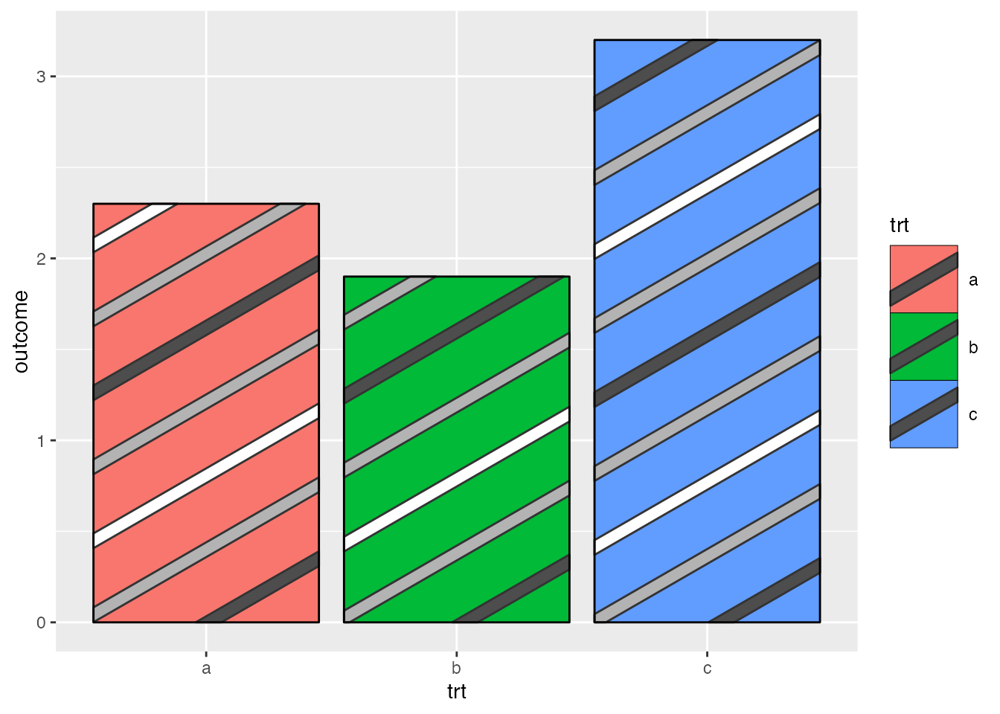
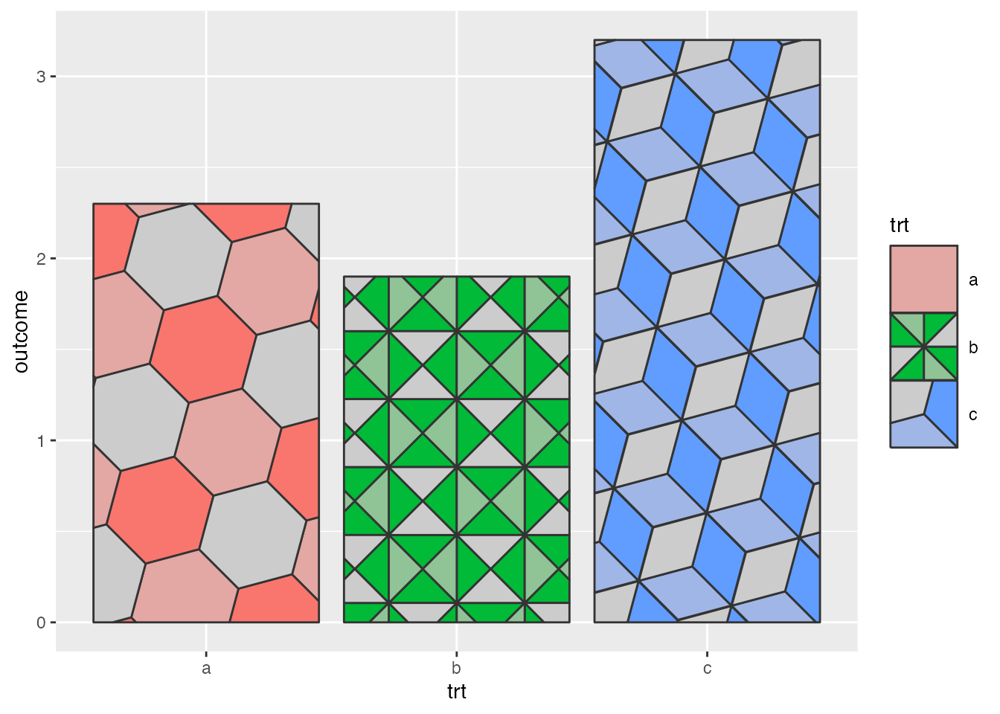

library("ggplot2")
library("ggpattern")Developing Patterns
Developing Patterns - overview
To develop a pattern for use with {ggpattern} (and any other packages that use {gridpattern}) you will need to:
- Decide whether this is a geometry-based pattern or an array-based pattern.
- Create a function with the required arguments and return value
- Use
options()to let{gridpattern}know that a certain pattern name should be delegated to your function.
This vignette shows how to:
- write a
create_pattern()function of the correct signature for a geometry-based pattern or array-based pattern - Instruct
{ggpattern}on where to find this user-defined pattern
Table of Contents
Pattern Classification - geometry-based and array-based
There are only 2 high-level classes of pattern supported by gridpattern - geometry-based and array-based.
Geometry-based patterns create a series of geometry objects and trim them (using sf::st_intersection(), gridGeometry::polyclipGrob(), gridpattern::alphaMaskGrob(), etc) to be within the boundary of the grob. For example, the ‘stripes’ pattern in gridpattern is a series of equally spaced rectangular polygons.
Array-based patterns are RGBA image arrays. Any supplied image will be processed by gridpattern to ensure it is masked to only apply to the area within the grob’s boundary.
{ggpattern} Aesthetics - Descriptions and Defaults
Although custom {gridpattern} pattern parameters need not limit itself to the set of aesthetics provided by {ggpattern} doing so may make your pattern more useful for others:
{ggpattern} aesthetic summary - click to open/close
| aesthetic | description | default | possible values |
|---|---|---|---|
pattern |
Name of the pattern to draw | ‘stripe’ | gridpattern::names_pattern |
pattern_alpha |
Alpha | 1 | value in range [0, 1] or NA |
pattern_angle |
Rotation angle (entire pattern) | 30 | angle in degrees |
pattern_aspect_ratio |
Aspect ratio adjustment | NA | usual range [0.01, 10] |
pattern_colour |
Stroke colour | ‘grey20’ | colour |
pattern_density |
Approx. fraction of area the pattern fills | 0.2 | value in range [0, 1] |
pattern_filename |
Image filename/URL | ’’ | Filename/URL |
pattern_fill2 |
Second fill colour | ‘#4169E1’ | colour |
pattern_fill |
Fill colour | ‘grey80’ | colour |
pattern_filter |
Image scaling filter | ‘lanczos’ | magick::filter_types |
pattern_frequency |
Frequency | 0.1 | |
pattern_gravity |
Image placement | ‘center’ | magick::gravity_types |
pattern_grid |
Pattern grid type | ‘square’ | ‘square’, ‘hex’, ‘hex_circle’ |
pattern_key_scale_factor |
Scale factor for pattern in legend | 1 | |
pattern_linetype |
Stroke linetype | 1 | linetype |
pattern_option_1 - 5 |
Generic options for expansion | 0 | |
pattern_orientation |
Orientation | ‘vertical’ | ‘vertical’, ‘horizontal’, ‘radial’ |
pattern_phase |
Phase | 0 | |
pattern_res |
Pattern resolution (pixels per inch) | NA | |
pattern_rot |
Rotation angle (shape within pattern) | 0 | angle in degrees |
pattern_scale |
Scale | 1 | Multiplier |
pattern_shape |
Plotting shape | 1 | shapes |
pattern_size |
Stroke linewidth | 1 | linewidth |
pattern_spacing |
Spacing between repetitions of pattern | 0.05 | value in range [0, 1] (snpc units) |
pattern_subtype |
Generic control option | NA | pattern-dependent |
pattern_type |
Generic control option | NA | pattern-dependent |
pattern_xoffset |
Shift pattern along x axis | 0 | value in range [0, 1] (snpc units) |
pattern_yoffset |
Shift pattern along y axis | 0 | value in range [0, 1] (snpc units) |
Note {ggpattern} may also pass other geom aesthetics of possible interest such as fill. Also note that {ggpattern} will only pass pattern aesthetics values of length one but if the pattern is called directly by gridpattern::patternGrob() then the pattern may be passed pattern parameters of arbitrary length.
Geometry-based pattern functions - Formal Arguments and Return Values
All geometry-based pattern creation functions must:
Have the exact function signature:
function(params, boundary_df, aspect_ratio, legend)params- parameters for the pattern (the aesthetics) e.gpattern_fillboundary_df- data.frame containing polygon information i.e. Thepolygon_dfformat.aspect_ratio- the best guess that{gridpattern}/{ggpattern}is able to make as to the aspect ratio of the viewport in which this pattern is being rendered.legendlogical value to indicate whether or not this function is being called to render a key legend or the in-place geom fill.
Return a grid grob object. This can be any valid grob including a
grid::grobTree(). The user should make sure it lies within the boundary represented byboundary_dfeither by clipping with functions likesf::st_intersection(),gridGeometry::polyclipGrob(),gridpattern::alphaMaskGrob(), etc. or using bounded grob functions likegridpattern::patternGrob()orgrid::polygonGrob().
Array-based pattern functions - Formal Arguments and Return Values
All array-based pattern creation functions must:
- Have the exact function signature:
function(width, height, params, legend)width,height- dimensions of the bounding box of the geom areaparams- parameters from the geom (the aesthetics) e.gpattern_filllegendlogical value to indicate whether or not this function is being called to render a key legend or the in-place geom fill.
- Return a 3D array of RGBA values (all values in the range [0, 1]).
gridpatternitself will mask this image so that it only applies to the area within the grob’s boundary.
The polygon_df data.frame format
The polygon_df is a very simple data.frame format to contain polygon values. This is used to pass the coordinates of the geom boundary from the geom to the pattern generating function.
It contains only ‘x’ and ‘y’ columns for the coordinates, and an ‘id’ column used to signify which polygon the coordinates belong to.
The following polygon_df data.frame contains 2 polygons:
| x | y | id |
|---|---|---|
| 0 | 0 | 1 |
| 1 | 0 | 1 |
| 1 | 1 | 1 |
| 0 | 1 | 1 |
| 0 | 0 | 2 |
| 2 | 0 | 2 |
| 2 | 1 | 2 |
| 0 | 1 | 2 |
Associating a function with {gridpattern} pattern name
There are two global option() values which can be set - one for geometry-based patterns, and the other for array-based patterns.
The global values should point to a named list, where the names are the pattern names you want to use within {gridpattern}, and the named values are the actual functions. Note for backwards-compatibility with the original {ggpattern} system these options start with ggpattern instead of gridpattern.
options(ggpattern_array_funcs = list(your_pattern_name = your_pattern_function))
options(ggpattern_geometry_funcs = list(your_pattern_name = your_pattern_function))Pattern names must be different from any of the builtin patterns included in {gridpattern}.
Example: Multiple colored stripes (serializing aesthetics)
All geometry-based pattern creation functions must:
- Have the exact function signature:
function(params, boundary_df, aspect_ratio, legend)params- parameters from the geom (the aesthetics) e.gpattern_fillboundary_df- data.frame containing polygon information i.e. Thepolygon_dfformat.aspect_ratio- the best guess that{gridpattern}/{ggpattern}is able to make as to the aspect ratio of the viewport in which this pattern is being rendered.legendlogical value to indicate whether or not this function is being called to render a key legend or the in-place geom fill.
- Return a grid grob bounded by the boundary represented by
boundary_df(including grid structures like agrid::grobTree()).
Since {ggplot2} only allows single-valued aesthetics you can only normally create single-colored stripe patterns in {ggpattern} even though the underlying {gridpattern} stripe pattern supports multiple-colored stripes. In this example we’ll create a ‘multicolor_stripe’ pattern that serializes multiple pattern_colour and pattern_fill colors using comma-separated values.
multicolor_stripe_pattern <- function(params, boundary_df, aspect_ratio,
legend = FALSE) {
args <- as.list(params)
args <- args[grep("^pattern_", names(args))]
args$pattern_colour <- strsplit(args$pattern_colour, ",")[[1]]
args$pattern_fill <- strsplit(args$pattern_fill, ",")[[1]]
args$pattern <- "stripe"
args$x <- boundary_df$x
args$y <- boundary_df$y
args$id <- boundary_df$id
args$prefix <- ""
do.call(gridpattern::patternGrob, args)
}A global option ggpattern_geometry_funcs is a named list which contains geometry-based pattern creating functions to use outside of ggpattern.
The name used in this list corresponds to the pattern name used with the geom - in this case we will be using pattern = 'polygon'.
options(ggpattern_geometry_funcs = list(multicolor_stripe = multicolor_stripe_pattern))df <- data.frame(trt = c("a", "b", "c"), outcome = c(2.3, 1.9, 3.2))
ggplot(df, aes(trt, outcome)) +
geom_col_pattern(aes(fill = trt), colour = 'black',
pattern = 'multicolor_stripe',
pattern_fill = "grey30,grey70,white,grey70",
pattern_density = 0.2,
pattern_spacing = 0.1) +
theme(legend.key.size = unit(1.2, 'cm'))
Example: Three-color polygon tilings (adapting {ggplot2} aesthetics)
All geometry-based pattern creation functions must:
- Have the exact function signature:
function(params, boundary_df, aspect_ratio, legend)params- parameters from the geom (the aesthetics) e.gpattern_fillboundary_df- data.frame containing polygon information i.e. Thepolygon_dfformat.aspect_ratio- the best guess that{gridpattern}/{ggpattern}is able to make as to the aspect ratio of the viewport in which this pattern is being rendered.legendlogical value to indicate whether or not this function is being called to render a key legend or the in-place geom fill.
- Return a grid grob bounded by the boundary represented by
boundary_df(including grid structures like agrid::grobTree()).
For this example we’ll adapt the built-in ‘polygon_tiling’ pattern to create a new ‘tiling3’ pattern that fills the polygon tiling with three colors: the fill aesthetic, the pattern_fill aesthetic, and their “average” color.
tiling3_pattern <- function(params, boundary_df, aspect_ratio, legend = FALSE) {
args <- as.list(params)
args <- args[grep("^pattern_", names(args))]
# hexagonal tiling using "regular_polygon" pattern
args$pattern <- "polygon_tiling"
# three-color tiling using `fill`, `pattern_fill` and their "average"
avg_col <- gridpattern::mean_col(params$fill, params$pattern_fill)
args$pattern_fill <- c(params$fill, avg_col, args$pattern_fill)
args$x <- boundary_df$x
args$y <- boundary_df$y
args$id <- boundary_df$id
args$prefix <- ""
do.call(gridpattern::patternGrob, args)
}A global option ggpattern_geometry_funcs is a named list which contains geometry-based pattern creating functions to use outside of ggpattern.
The name used in this list corresponds to the pattern name used with the geom - in this case we will be using pattern = 'complex'.
options(ggpattern_geometry_funcs = list(tiling3 = tiling3_pattern))df <- data.frame(trt = c("a", "b", "c"), outcome = c(2.3, 1.9, 3.2))
ggplot(df, aes(trt, outcome)) +
geom_col_pattern(aes(fill = trt, pattern_type = trt),
pattern = 'tiling3',
pattern_angle = 45,
pattern_spacing = 0.15) +
scale_pattern_type_manual(values = c("hexagonal", "tetrakis_square", "rhombille")) +
theme(legend.key.size = unit(1.2, 'cm'))
Other examples
The {gridpattern} package contains a vignette on developing {gridpattern} / {ggpattern} patterns with a few more examples including an example of layering patterns on top of each other. Use vignette("developing-patterns", package="gridpattern") to see it.
Also the {gridpattern} source contains the full source code for seventeen patterns: https://github.com/trevorld/gridpattern/tree/main/R